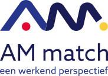
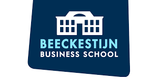
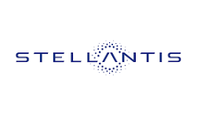
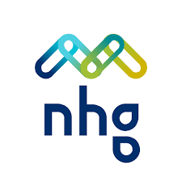
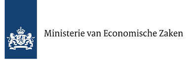
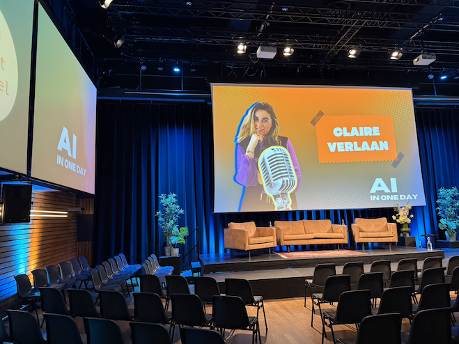

Je hebt de AI‑tools? Nu het team dat ze gebruikt.
Praktisch, eerlijk en zonder hype.
Vertrouwd door





Steeds meer organisaties investeren in AI. De organisaties die echt verschil maken, zorgen dat hun mensen de techniek met vertrouwen kunnen gebruiken. Dat is de menselijke kant van AI.
Keynotes die inspireren, trainingen die beklijven
Geen standaard cursussen, maar interactieve workshops afgestemd op jouw team.
Bekijk trainingen KeynoteInspirerende sessies op basis van de laatste trends over de impact van AI. Ideaal voor events.
Plan een gesprek Strategisch adviesHelder beleid, ethische kaders en roadmaps voor de lange termijn.
Bekijk advies
Tools zijn er genoeg. Het verschil maken je mensen.
Ik ben Claire. Sinds eind 2022 geef ik trainingen, keynotes en advies over generatieve AI. Speciaal voor teams die er vandaag mee aan de slag willen of een verbeterslag nodig hebben. Want ja, bijhouden is al een baan op zichzelf. Dat doe ik graag voor jullie. Eerlijk en altijd met energie.
Meer over weClairify“Je maakte AI praktisch, toegankelijk en vooral leuk om mee aan de slag te gaan.”
“WeClairify’s AI-workshop was heel verhelderend! Claire gaf een duidelijke en boeiende presentatie, waarin het duidelijk werd dat ze veel expertise heeft in haar vakgebied. Ze voorzag me van waardevolle, praktische tips die ik direct de dagen erna heb kunnen toepassen in mijn werk. De workshop had een goede mix van theoretische kennis en praktische oefeningen. Een hele leerzame ervaring!”
“Ik mocht een workshop van WeClairify bijwonen en deze was erg professioneel en interactief. Claire ziet diep in de materie en is op de hoogte van de trends en ontwikkelingen op het gebied van AI van de dag van morgen. Ik heb de kennis de volgende dag al toe kunnen passen voor marketing-activiteiten, mede door de leerzame opdrachten en kennis-overdracht in de workshop.”
“Als AM match werken we al een paar jaar succesvol samen met weClairify. WeClairify heeft door middel van workshops ons de mogelijkheden van AI laten zien. Heel inspirerende interactieve workshops die voor velen van ons de ogen hebben geopend. Vervolgens onderzochten we de mogelijkheden om AI toe te passen in onze dagelijkse processen. WeClairify ondersteunt ons bij de implementatie van deze mogelijkheden. De benadering is persoonlijk met respect voor de beperkt aanwezige kennis binnen ons bedrijf. Een succesvolle samenwerking dus!”
“Ze deed het echt goed, vlot mens en kon ons goed helpen met AH GPT en het maken van een eerste agent. Wat helemaal niet zo moeilijk blijkt te zijn. Ik had niet verwacht dat we dat zouden gaan leren maar het was een mega eye opener. Ik heb veel aan de training gehad.”
“Goede introductie over AI. Heeft mijn ogen geopend. Claire wist de aandacht goed vast te houden en kon op het moment dat er vragen kwamen die niet persé onderdeel waren van de presentatie alsnog met goede voorbeelden komen.”
“De "Kick start in AI tools" workshop was heel erg leerzaam. Het was praktisch en hands-on, wat het leren nog leuker maakte. In slechts 3 uur hebben we met verschillende AI-tools kunnen experimenteren en trainen, waardoor ik echt begon te begrijpen hoe ze werken. Claire brengt de kennis goed over en zorgt ervoor dat iedereen betrokken was. Deze workshop is een absolute aanrader voor iedereen die geïnteresseerd is in AI en wil leren hoe deze tools in de praktijk werken. Bedankt, Claire!”
“De workshop was een goede combinatie tussen theorie en praktijk. Het heeft mij geïnspireerd meteen met een aantal tools aan de slag te gaan. Bedankt en succes, Claire!”
“Als nieuwbouwspecialisten worden wij dagelijks geconfronteerd met de razendsnelle ontwikkelingen op het gebied van AI. De uitdaging is daarbij niet alleen om overzicht te houden, maar vooral ook om het hele team mee te nemen in deze transitie. Dankzij de training van Claire hebben we hierin een belangrijke stap gezet. In één dag neemt zij je mee langs de essentie van AI, met een sterke focus op praktische toepasbaarheid en direct rendement in de dagelijkse werkzaamheden. Haar praktijkgerichte aanpak, heldere uitleg en enthousiasme zorgen ervoor dat de drempel om AI daadwerkelijk te gebruiken snel verdwijnt. Het resultaat was direct merkbaar: meer inzicht, meer vertrouwen binnen het team en een hogere efficiëntie in onze werkzaamheden. Een waardevolle investering en absoluut een aanrader voor organisaties die AI concreet willen inzetten.”
“De combinatie van theorie en praktijk maakt deze workshop heel toegankelijk en praktisch toepasbaar. Claire is kundig, enthousiasme en up to date in een wereld van AI die continue beweegt. Ik weet nu welke AI tools voor mijn bedrijf nuttig zijn en hoe ik deze op hoofdlijnen kan gebruiken. Echt een aanrader! Ook als je geen beginner bent zoals ik.”
“Claire, dank voor de leuke en inspirerende AI-sessie van gisteren! Je maakte AI praktisch, toegankelijk en vooral leuk om mee aan de slag te gaan.”
Veelgestelde vragen
Elke organisatie is anders. Wat werkt voor een marketingteam van 10 personen werkt niet voor een salesteam van 50. Boek een kennismaking en we bespreken jouw situatie, uitdagingen en doelen.
Plan een afspraakWelke onderwerpen worden er besproken?
We behandelen de theorie van LLM's, ethiek en privacy, en kijken altijd naar het laatste AI nieuws. Daarnaast duiken we in specifieke tool capabilities. Andere belangrijke onderdelen zijn professioneel prompten, workflows en AI agents, ondersteund door voorbeeld use cases waarbij theorie en praktijk elkaar ontmoeten. Tot slot is er altijd ruimte voor maatwerk: het is mogelijk om eigen onderwerpen en vragen in te brengen.
Wat zijn de kosten van een AI-training?
De tarieven zijn marktconform en hangen af van de groepsgrootte, specifieke wensen en duur. Een halve-dag training start vanaf €2.500. Volle-dag programma's vanaf €3.500. Voor keynotes gelden andere prijzen.
Welke tools worden er doorgaans besproken in de AI trainingen?
Er wordt met name gewerkt in ChatGPT, Claude, Gemini en Microsoft Copilot. Andere populaire tools zijn NotebookLM, Runway, Higgsfield, Midjourney en nog veel meer. Het is ook mogelijk educatie voor een tool aan te vragen.
Werken jullie alleen met grote organisaties?
Nee, er wordt gewerkt met teams vanaf 5 personen. Of het nu een scale-up is van 20 mensen of een corporate met 500+ medewerkers, de aanpak past zich aan jouw context aan. Veel scale-ups starten met een training, grotere organisaties vaak met een volledige implementatie.
Benieuwd wat AI voor jouw team kan doen?
Laat je gegevens en een kort bericht achter, dan neem ik contact met je op. Liever direct? Dat kan ook.
Blijf op de hoogte van de nieuwste AI-tools
Een wekelijkse dosis AI-inspiratie: nieuwe (gratis) tools, tips om je marketing te versterken met AI en het belangrijkste nieuws.